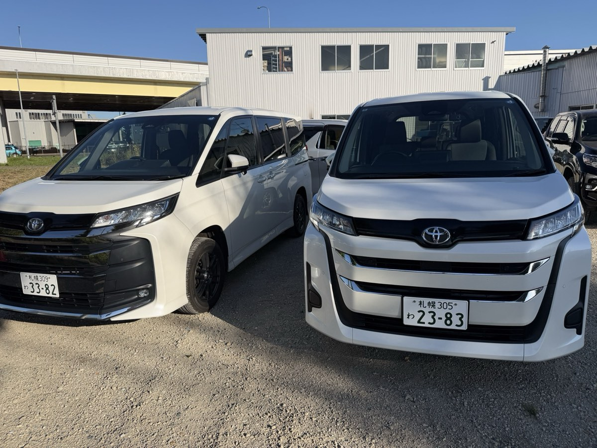

ホテルで車を受け取って、そのまま郊外へ。札幌から日帰り・1泊で行ける定番ドライブ先と所要時間をまとめました。
お届け先を指定して予約する| 行き先 | 札幌から | 見どころ |
|---|---|---|
| 小樽 | 約1時間 | 運河・北一硝子・寿司屋通り。冬は「小樽雪あかりの路」。札幌から最も気軽な日帰り先。 |
| 積丹半島 | 約2時間 | 夏の積丹ブルーと神威岬、6〜8月のウニ丼。小樽と組み合わせて日帰りできます。 |
| 支笏湖・定山渓温泉 | 約1時間 | 透明度の高い支笏湖と、札幌の奥座敷・定山渓温泉。冬は支笏湖の氷濤まつり。 |
| 富良野・美瑛 | 約2〜2.5時間 | 7月のラベンダー畑、青い池、パッチワークの丘。1泊するとゆっくり回れます。 |
| 洞爺湖・登別 | 約2時間 | 洞爺湖の展望と温泉、登別の地獄谷。ファミリーに人気の温泉ドライブ。 |
| 旭山動物園 | 約2時間 | 高速道路で旭川へ。冬はペンギンの散歩が見られます。 |
| ニセコ・ルスツ | 約2時間 | 冬はスキー、夏はラフティングや羊蹄山の景色。荷物が多いならミニバンが便利。 |
| 北広島（エスコンフィールドHOKKAIDO） | 約30〜40分 | 野球観戦やイベントに。北広島市はお届けエリア外のため、札幌市内で受け取って向かってください。 |
※ 所要時間は札幌中心部からの車での目安です。冬季や渋滞時は長くなります。
朝ホテルで車を受け取り、積丹半島の神威岬へ（約2時間）。ウニ丼の昼食後、帰り道に小樽運河を散策して、夜に札幌のホテルで返却。
1日目は富良野のラベンダー畑と美瑛の青い池、2日目は旭山動物園に寄って札幌へ戻るルート。家族やグループならミニバンが快適です。
支笏湖の氷濤まつり（例年1〜2月）を見て、定山渓温泉で日帰り入浴。全車4WD・スタッドレス標準なので冬道も安心です。冬の運転のコツ
コンパクト（¥4,500〜）やコンパクトSUV（¥4,500〜）で十分。燃費もよく駐車もしやすいです。
SUV（ハリアー / CX-5 等、¥5,000〜）。荷室が広く、雪道でも安定感があります。
7〜8人乗りのミニバン（¥8,500〜）。スキーやゴルフの荷物も積めます。
アルファードクラス（¥10,500〜）。3世代旅行やゲストの送迎に。
※ 料金は24時間あたりの目安です（時期により変動）。料金表